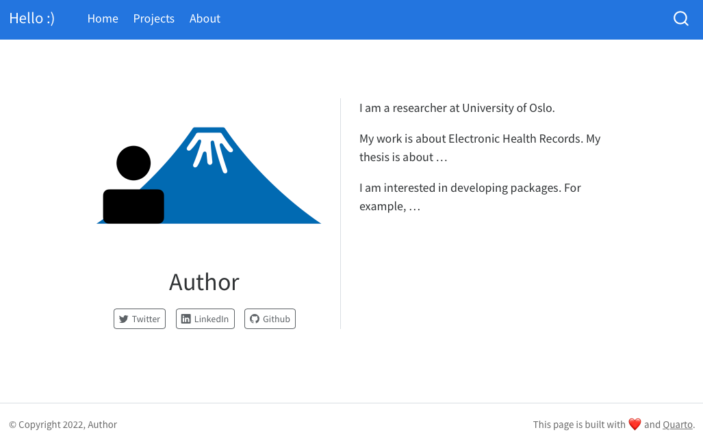

Introduction to qtwAcademic
Chi Zhang
2022-12-19
Source:../vignettes/qtwAcademic.Rmd
qtwAcademic.RmdCreating and publishing a Quarto websites is not difficult, however, the flexibility and options Quarto provides can make it challenging for people who are new to Quarto and websites to get started. This package aims to make it quick and easy for users to create their own websites for personal portfolio and/or course websites as an R project.
Templates
Personal website
Website for courses or workshops
Minimal website template that can be easily customized
Example: Minimal template
Here we introduce the template with minimal content. When a project
is created with Minimal template, the following content are
added to the directory:
-
_quarto.yml: metadata for the website, controls the layout of the website index.qmdabout.qmd-
profile.png: profile figure -
styles.css: style file. It is left empty in the template, but can be modified for advanced looks. projects/index.qmd
Click Render, the website is generated and can be seen in the Viewer panel.
Website structure
The homepage of the rendered website looks like this.

The navigation bar is on the top of the page. 3
pages are included in the minimal template: Home
(index.qmd), Projects
(projects/index.qmd) and About
(about.qmd).
The layout is specified under navbar section of
_quarto.yml, along with the title and footer of the
website. More about Quarto website navigation can be read here.
website:
page-navigation: true
title: "Hello :)"
page-footer:
left: "© Copyright 2022, Author"
right: "This page is built with ❤️ and [Quarto](https://quarto.org/)."
navbar:
left:
- href: index.qmd
text: Home
- href: projects/index.qmd
text: Projects
- href: about.qmd
text: AboutIt is straightforward to understand where to find the relevant files
in order to change the text. For example, Home contains
one figure and some text about the author, which can be edited in
index.qmd.